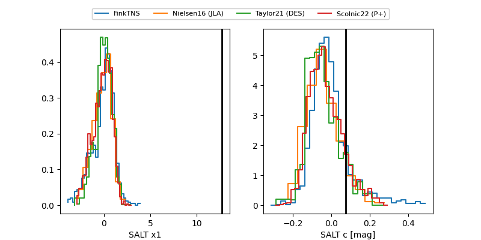

FINK: ZTF25abmqrlr
Lasair: ZTF25abmqrlr
ALeRCE: ZTF25abmqrlr
TNS: 2025wca
YSE: 2025wca
ZTF25abmqrlr (ztf,fink)
2025wca (tns,yse)
equatorial (ra, dec) = (280.1016,+79.81689)
galactic (l, b) = (111.4849,+27.15323)

last ztfg=19.80, ztfr=19.91
3 ztfg, 12 ztfr detections